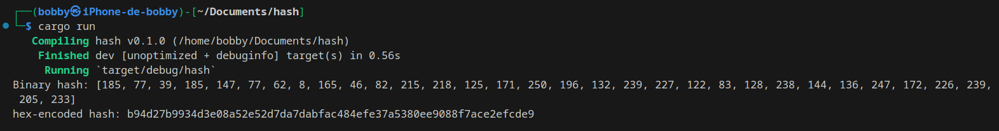
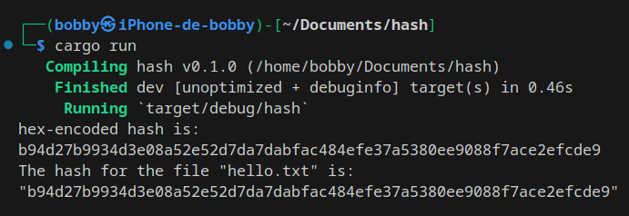
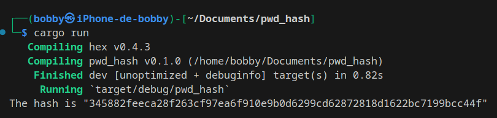

After implementing RSA in the previous section, we will use the sha-256 implementation with Rust via the crate we mentioned in the introduction: sha2. This part can be useful for verifying the integrity of data such as files or strings, as well as generating passwords as examples. According to the crate documentation, six standard algorithms are available with sha2; here we will use sha-256.
To practice the concepts related to sha-256, we recommend creating a new project via cargo new.
Our first example concerns applying the hash function on a simple string. To do this, you will need to integrate the relevant crates into your Cargo.toml:
hex = 0.4.3sha2 = 0.10.8hex-literal = 0.4.1Next, as you probably expect, we will define a String (the one to be hashed) and a "hasher" (the object used to hash our String). For this "hasher", we create it via the Digest trait and its new() method. This new() method simply returns a Self: creating a new instance of "hasher". We will insert values into this "hasher" via the update method, which can be called multiple times, and then we will finalize its creation via the finalize method. The "hex" crate will be used to convert our result into a hexadecimal value, and hex_literal will help us compare our "hasher" object with a hex value calculated by another means. Here is the code snippet related to this first part:
use sha2::{Digest, Sha256};
use hex_literal::hex;
fn main() {
let mut hasher = Sha256::new();
let data = b"hello world";
hasher.update(data);
let hash = hasher.finalize();
println!("Binary hash: {:?}", hash);
let hex = hex::encode(&hash);
println!("hex-encoded hash: {}", hex);
}

If you want to ensure that your hash value is correct, you can use a site like xorbin to calculate it. To ensure the equivalence between our code and the calculated value later, we implement another piece of code.
use hex_literal::hex;
// ----- previous code -----
assert_eq!(
hash[..],
hex!("b94d27b9934d3e08a52e52d7da7dabfac484efe37a5380ee9088f7ace2efcde9")[..]
);
}
If the compilation and execution run without errors, it means the hash calculated by your function is correct! Now, we will implement sha-256 on a file.
The methodology is similar for creating the hasher; we just need to handle opening the target file and reading its content, which can be subject to potential errors (such as file not found or read/write permissions). In our example, we create a file hello.txt at the project level containing the string hello world. The data written in this file being the same as our initial String, the result of our two hash calculations should be identical in this case. Once again, error handling is not our priority here, so we will handle them with simple expect(). Here is the new code to implement:
use hex_literal::hex;
use sha2::{Digest, Sha256};
use std::{fs, io};
fn main() {
let path = "hello.txt";
let mut file = fs::File::open(&path).expect("Can't open the file");
let mut hasher_file = Sha256::new();
io::copy(&mut file, &mut hasher_file).expect("Can't copy");
let hash_file = hasher_file.finalize();
println!(
"The hash for the file {:?} is: \n{:?}",
&path,
hex::encode(hash_file)
);
}
If you want to compare the return values of your hashes, you can use the assert_eq! macro in the same way as previously by including the hash calculated on the string and the newly calculated hash on our file. After execution, we can see that our two hashes are indeed identical as shown in the following figure:

The last point we will cover is creating a hashed password with sha-256. This method is for demonstration purposes only; other specific crates are recommended for creating hashed passwords such as sha_crypt.
You won't be surprised that in this part we will use the "hasher" system again. A function will be created where we will take as parameters the password, a salt (a value added to the base password so that two identical passwords do not return the same value with a different salt), and the value that will contain the output of our function. The type returned by this function will be a Digest (translated in French as an "envelope", a wrapper linked to cryptographic functions that has a fixed size). The corresponding code is as follows.
use sha2::{Digest, Sha256};
fn hash_password<D: Digest>(password: &str, salt: &str, output: &mut [u8]) {
let mut hasher = D::new();
hasher.update(password.as_bytes());
hasher.update(b"$");
hasher.update(salt.as_bytes());
output.copy_from_slice(&hasher.finalize())
}
fn main() {
let mut buf1 = [0u8; 32];
hash_password::<Sha256>("Th@tsAg0odP@ss", "salt", &mut buf1);
println!("The hash is {:?}", hex::encode(buf1));
}
In our function, we encode the password passed as a parameter and the salt with as_bytes to convert the characters into bytes and add the character $ to delimit the password from the salt. We copy the result of our hasher.finalize() into the output variable, a value returned by the function. This value will be contained in an array of 32 u8 in our main() function within buf1. After execution, our hashed and salted password appears.

We have now finished this section on the implementation of sha-256. You will find the source code available in the next section.